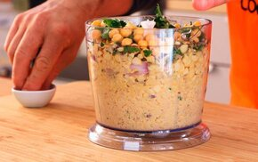

Receta tradicional del falafel
¿QUE INGREDIENTES NECESITO?
El ingrediente principipal de nuestro exquisito falafel es el garbanzo, por eso debemos dejarlo remojar 24hs aproximadamente, para que se hidraten correctamente y logre aumentar su volumen
Preparacion de los garbanzos
- Dejar reposar los garbanzos en agua durante 24 hs
- Retirar el agua restante
- Una vez ya listos, retirar pelicula que recubre los garbanzos para poder comenzar con la receta
Preparacion
-
Tomar un bowl y picar la cebolla, ajo y perejil bien finito. Añadir los garbanzos que habíamos reservado Añadir el resto de los ingredientes y Agregar media taza de harina de garbanzos (también puede ser harina común o pan rallado). Llevar todo a la procesadora hasta obtener una masa suave y consistente.

-
Condimentar la mezcla con sal, comino, ají molido y pimiento, polvo para hornear y levadura (para que se hinche la masa) y revolver bien. Finalmente añadir el polvo de garbanzos e integrar todo bien.
-
Aplastar la masa en el bowl, tapar y reservar en la heladera por 30 minutos.
-
Sacar la masa de la heladera y armar bolitas de la masa que habíamos reservado. Precalentar una sartén con aceite. Llevar las bolitas a la sartén y freír (si no se desarman significa que tienen la cantidad necesaria de harina).
-
Retirar del aceite una vez que las bolitas se hayan dorado bien y servir en una fuente. Puede acompañarse con lechuga, tomate, pepino, zanahoria, mayonesa entre otros aderezos.